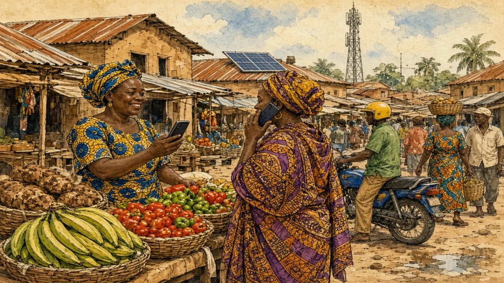

Many Africans skipped the bank branch and went straight to the phone. A Kenyan service called M-Pesa changed how millions of people pay.
Sub-Saharan Africa · Technology & money · Lesson 2 of 7
🌍 World map · ← Around the World: Sub-Saharan Africa · 🌱 Easier version (A2) · ← Is It All Safaris and Wild Animals? · Thousands of Languages: Multilingual by Default →

Each new word is hidden in a sentence. Read it aloud and say what you think the bold word means from the rest of the sentence — then reveal it and see how close you were.
Read each part. After it, there's a quick comprehension check (try the questions from memory first), then one thing to discuss.
In the early 2000s, few adults in Kenya had a bank account, and branches were scarce, so far from most villages that saving money safely was difficult. However, mobile phones were spreading so quickly that millions of people had one within a few years. In 2007, the mobile network Safaricom launched a service called M-Pesa; “pesa” is the Swahili word for money. Customers gave cash to a local agent, who credited their phone, and they could then send money to anyone with a simple text message, even on a basic phone with no internet. It was such a practical idea that it spread across the country within a few years.
1. What is M-Pesa?
2. Why was it useful?
1. A mobile money service launched in Kenya in 2007.
2. People without bank accounts could send and receive money by text message through local agents.
Sub-Saharan Africa now has well over half of the world's registered mobile money accounts, and countries such as Kenya, Tanzania, Uganda and Ghana use it every day. People pay market sellers, taxi drivers, school fees and electricity bills; farmers receive payment for crops; workers in cities send remittances to relatives in villages. In Kenya, the yearly value of transactions has been estimated at about half of the country's annual economic output. Thanks to mobile money, small businesses can keep records and access loans, and some companies sell solar lamps and home solar systems on a pay-as-you-go basis, with customers paying a small amount by phone each week. The result is that finance reaches people far faster than a network of bank branches ever could.
1. What can people do with mobile money?
2. How does pay-as-you-go solar work?
1. Pay for goods, school fees and bills, receive crop payments and send remittances.
2. Customers pay a small amount by phone each week for a solar system.
Mobile money does not solve every problem. Fees can be a burden for small payments, fraud and scams occur, and women and people in very remote areas are less likely to own a phone. In some countries, regulators have struggled to keep pace. Nor is the innovation limited to finance: Nairobi, Lagos, Accra and Kigali all have growing technology sectors, and startups there build apps for farming, health and transport. The story shows that being short of one kind of infrastructure does not mean being behind in everything. In fact, a shortage of banks was so great a problem that it inspired a solution which some richer countries have since copied.
1. Name one limit of mobile money.
2. What does the story show about infrastructure?
1. For example fees, fraud, or lower phone ownership among women and in remote areas.
2. That lacking one kind does not mean being behind in everything: it can inspire new solutions.
A stereotype and the reality rarely match. This lesson's grammar gives you the structure to describe the difference.
Complete each sentence about this topic.
1. Banks were scarce that most villagers had no account. (so / such)
2. It was a useful service that millions joined. (so / such)
3. Banks were rare. , people started to use phone agents. (As a result / Thanks to)
1. so
2. such
3. As a result
1. mobile money, a farmer can be paid without travelling to town. (Thanks to / As a result)
2. The network grew fast that regulators struggled to keep up. (so / such)
3. It was an easy system that even a basic phone could use it. (so / such)
1. Thanks to
2. so
3. such
Hold on to this — you'll need it in the Speak tab.
The stereotype of a “technologically backward” Africa confuses missing infrastructure with missing ideas. Where there are no bank branches, people find other ways, and the solutions are sometimes more advanced than the systems they replaced. Mobile money is a famous example, but there are others: drones that deliver medical supplies in Rwanda and Ghana, and apps that match farmers with buyers. The lesson is not that Africa has no problems, but that problems create demand for inventions, and that talent and ambition are not unequally spread across the world.
This is the heart of the lesson — do all of it out loud. The timer is there to keep you going: fill the time with detail rather than escaping it.
Explain how mobile money works and why it spread so fast, as if to a friend who thinks Africa is “behind” in technology. Move through the arc: a problem and a solution → how far it has spread → success and limits.
Use today's grammar at least three times, and work in at least five key words (mobile money, bank account, agent, remittance, transaction, leapfrog, infrastructure, access).
“Poorer countries can sometimes lead in technology because they have fewer old systems to replace.” Discuss.
Tell a story from your own world — work, family, the news — that connects to this topic. Stuck for an idea? Pick one of these and run with it:
🌍 World map · ← Around the World: Sub-Saharan Africa · 🌱 Easier version (A2) · ← Is It All Safaris and Wild Animals? · Thousands of Languages: Multilingual by Default →